Uma organização criada para promover, difundir e fomentar o esporte no cenário nacional.
Veja nossos projetos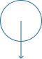
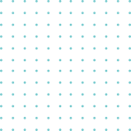
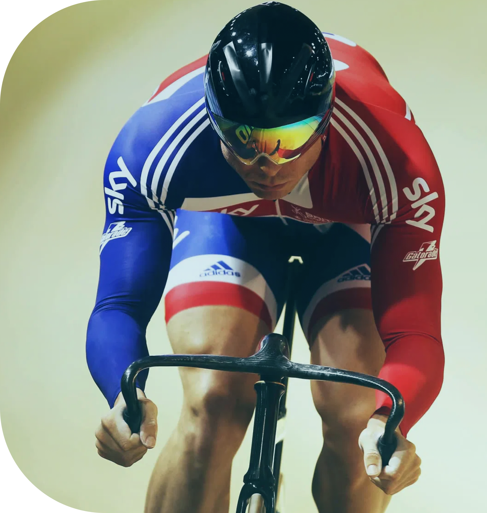
O Instituto Mais Esporte foi criado em 06 de Outubro de 2020 derivado do Instituto Cidadania e Voluntariado, a partir do entendimento de que no cenário atual, o sucesso da organização estava diretamente associado à definição de um escopo claro e objetivo. Desde a concepção do Instituto Cidadania e Voluntariado, em 2017, a instituição vinha dedicando-se de forma exitosa a projetos de cunho esportivo focados na promoção da cidadania, de modo que a evolução ao Instituto Mais Esporte foi natural e necessária ao reposicionamento da organização.
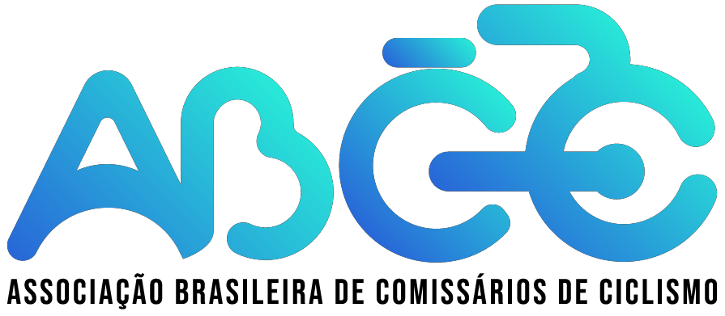
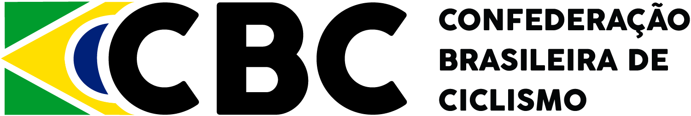
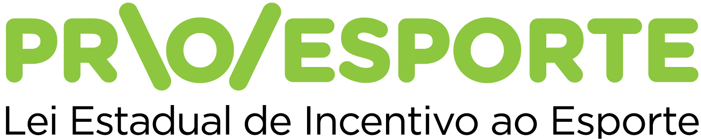
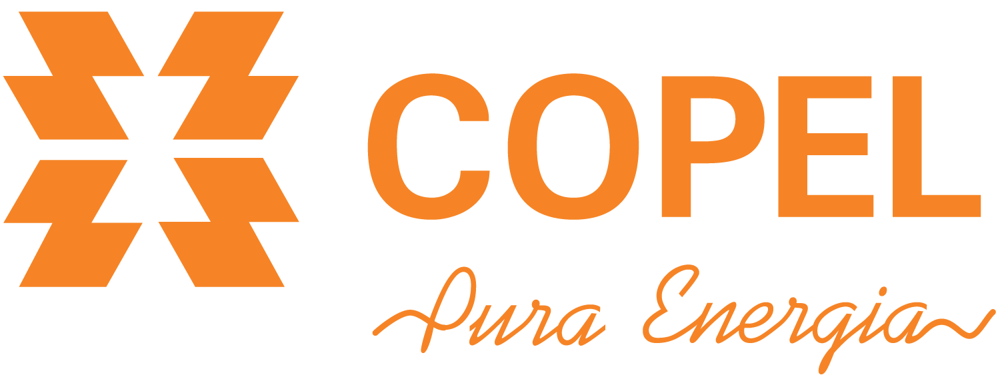
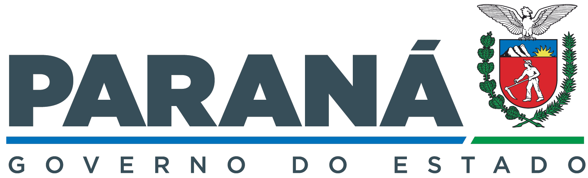
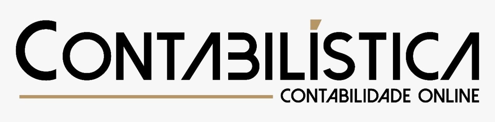
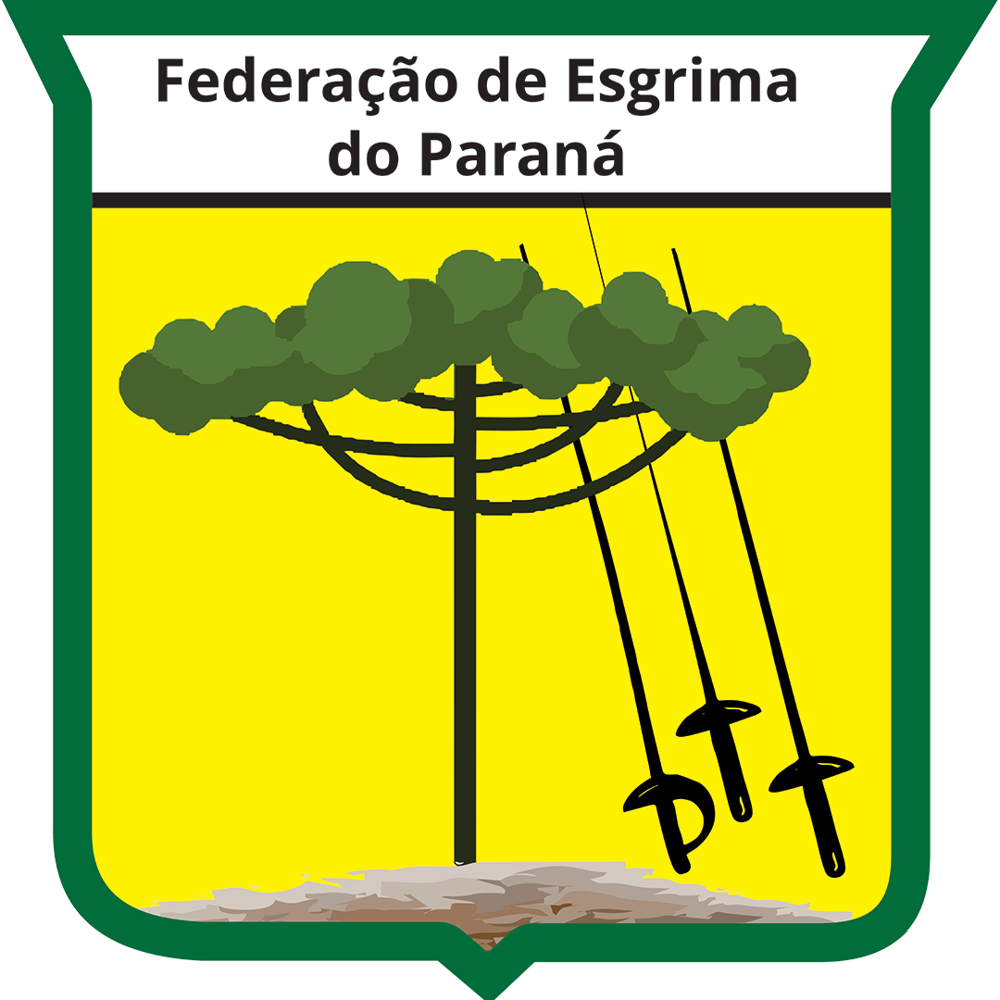
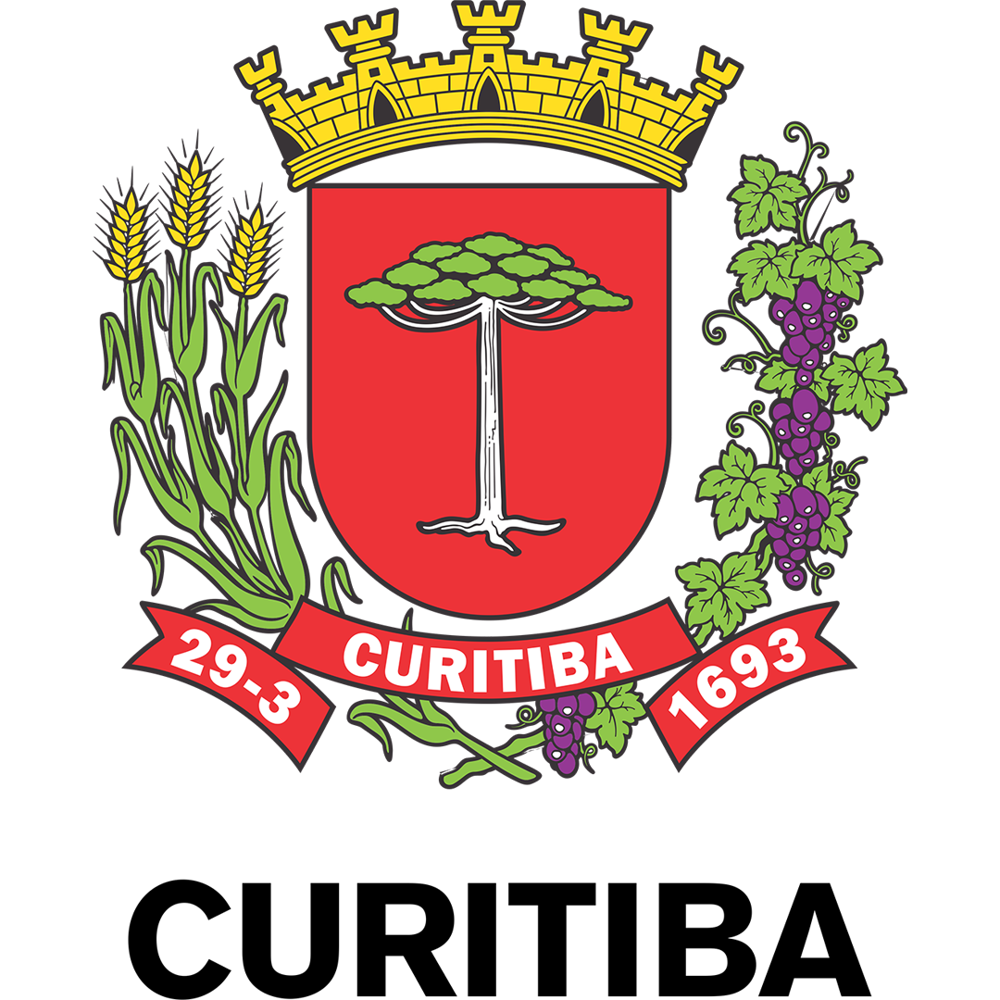
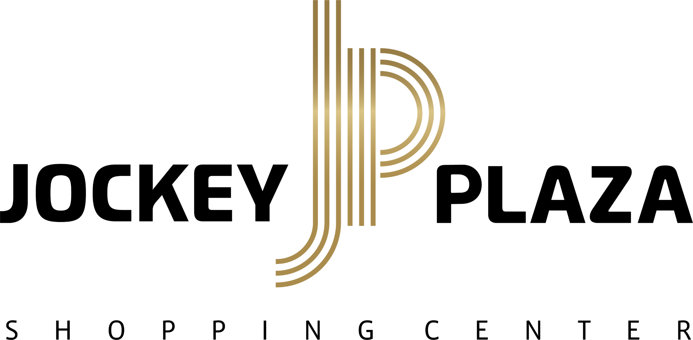